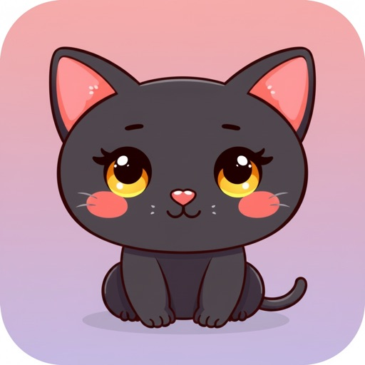
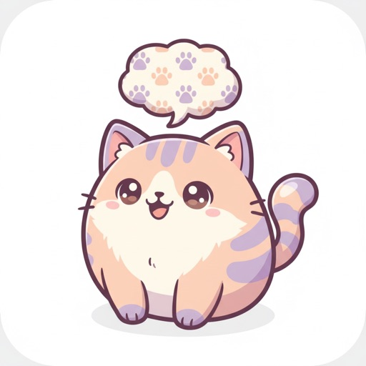

NyanVeil（喵紗）
Cozy Cat Collection · 養貓收集遊戲
一款溫馨療癒的養貓收集遊戲。收集並照顧各式各樣的貓咪，在輕鬆的步調裡享受與貓相伴的時光。
我用 AI 打造的 iOS App — 與貓咪有關的療癒小宇宙

一款溫馨療癒的養貓收集遊戲。收集並照顧各式各樣的貓咪，在輕鬆的步調裡享受與貓相伴的時光。

用學術出處詮釋你家主子的叫聲。結合研究資料，幫你解讀貓咪每一聲「喵」背後的含義。
用 AI 打造的前後端自動化測試框架：前端以 Playwright + pytest-BDD 跑端對端（E2E）情境，後端用 pytest 做單元與協定驗證。以下為近期實際執行的彙總數據。
自動化測試框架在 AI 輔助下開發，把原本需要數週的建置工作縮短到約 1 天。
我為 Claude Code 打造的 77 個 skill，每個都是一段可重複使用的自動化能力，依專案類型分類、自動部署到對應專案。
手機／遊戲 App 開發全流程：素材生成、自動化測試、上架（iOS / Android）、產品 forge → build → review → deploy 生命週期。最大類。
滲透測試與紅隊：AD 網域、C2、雲端與容器、行動 App、OSINT、提權、逆向、CTF。皆需明確授權使用。
品質保證與測試自動化：差異回歸測試、測試案例鏈、負載測試、雲端瀏覽器測試、bug 分級與分流。
跨所有專案共用的基礎建設：外部 CLI 橋接、多 agent code review、計畫交接、需求訪談、skill 製作工具。
安全掃描與稽核：API 安全測試、PR 機密掃描、持續性安全監控、OWASP ZAP、供應鏈稽核。
設計與原型：Figma 設計 token 擷取、Mermaid → FigJam、Pencil 同步、design-to-code（React + Tailwind）。
共 77 個 skill，其中 6 個為 app + qa 跨類別共用。分類依各 skill 自身的 projects 標記，部署時依專案類型自動篩選。
我在 Windows（微軟）與 macOS（蘋果）兩台機器上開發，靠一套「單一來源（single source of truth）」的同步機制，讓兩邊的 Claude 設定、行為與能力保持一致、不漂移。
放在 ~/.claude 的全域設定，定義跨所有專案的行為契約（誠實準則、回覆語言、commit／push 流程等），兩台機器共用同一份。
各專案的 project.env 標明 PROJECT_TYPE（app / qa / security / hacker / product），決定該專案要部署哪些 skill。
pre／post 指令 hook 以 hardlink 部署，原始檔一改即時生效；負責安全防護（如危險刪除攔截）與流程強制。
77 個 skill 以 symlink 依專案類型部署；改原始檔即同步到所有專案，只有新增／改名／刪除才需重跑同步。
同步腳本在部署時稽核 PROJECT_TYPE、skill 數量與版本，確保兩台機器拉到同一版本、行為一致。